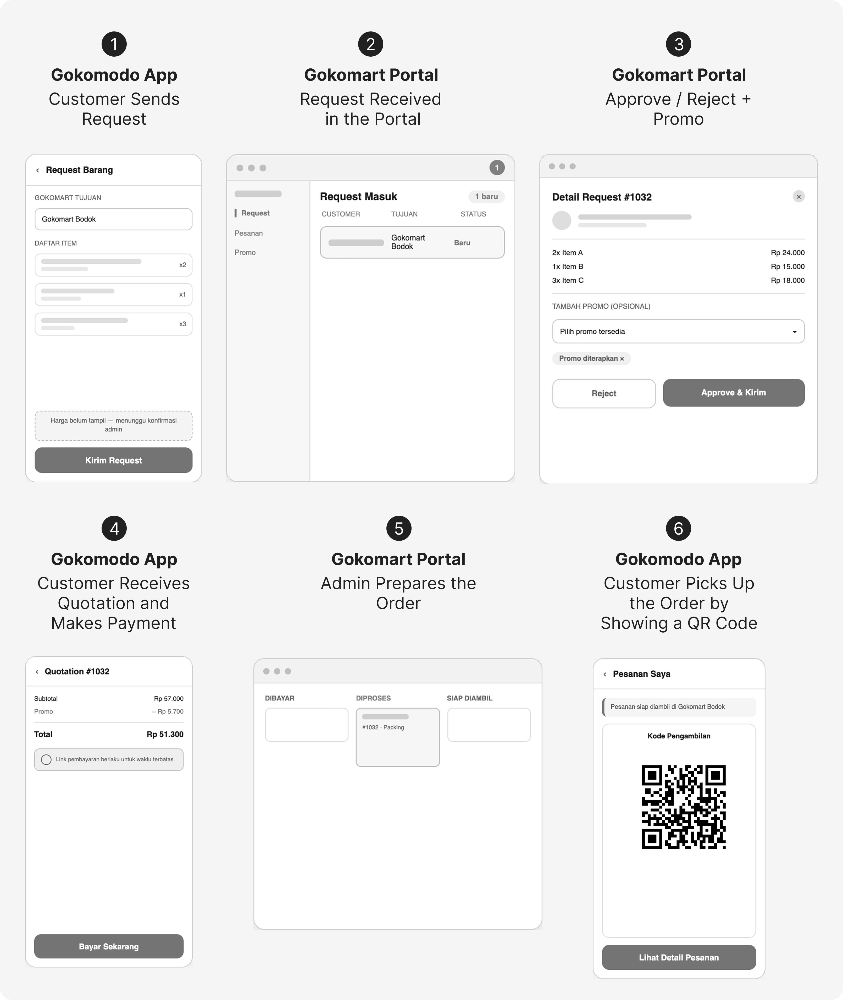
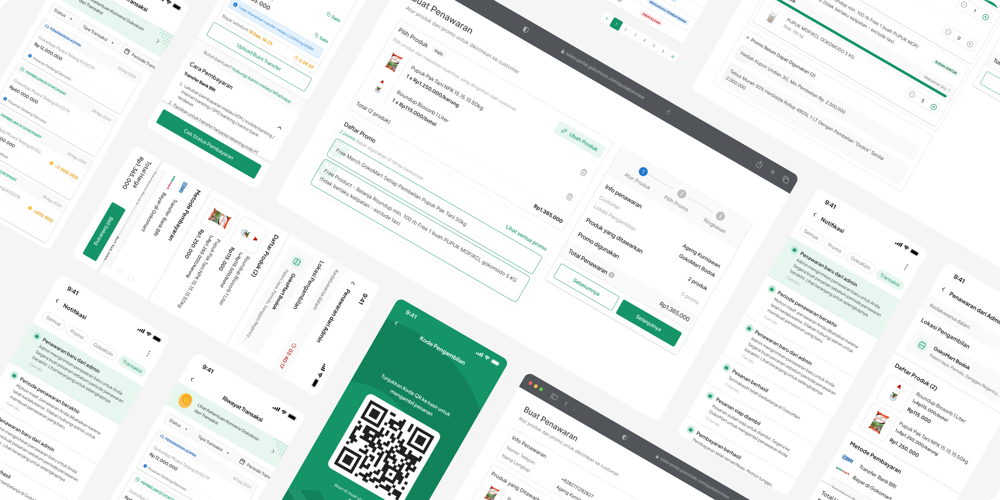

Turning WhatsApp Orders into a Trackable Funnel
Context
Most of our customers are farmers who are used to being served in person. They'd come to the store, talk to an admin directly, and complete the transaction face-to-face. When online ordering was first introduced, that habit didn't just disappear. Transactions moved to WhatsApp instead, echoing the same personal, conversational interaction they already knew.
The problem was that everything happened inside the admin's personal chat, so the team had zero visibility into how the channel was actually performing. There was no data on how many requests came in, how many got a response, or how many actually converted into a transaction.
This is where the need for a more structured system came in: moving the process off WhatsApp (where the data was fragmented and untrackable) into a proper platform (the Gokomart Portal for admins, and an RFQ-to-Quotation flow in the customer app), so every stage of the funnel could finally be measured.
Process and Research
This initiative came from the team itself, after recognizing that blind spot in the funnel. But the approach wasn't to replace WhatsApp with a conventional e-commerce flow outright because of the management still wasn't ready to display pricing openly. Beyond that, from the user's side, we chose to build on the existing behavior rather than fight it by keeping the same interaction pattern (ask first, admin responds, then transact) but moving it into the system, so every stage could be measured without forcing farmers to learn an entirely new way of shopping. The flow roughly looked like this:

Key improvement from the previous version: Every stage now has a timestamp and status logged by the system, so funnel drop-off can finally be measured, including where customers are most likely to abandon, instead of remaining a black box.
Pivot and Trade-offs
Admin as a Bottleneck
Unlike typical e-commerce where checkout happens automatically, this RFQ-to-Quotation flow depends on manual approval from the Gokomart admin at each store. The admin needs to check real stock availability and determine what promo can be applied.
Trade-off: Physical stock at the store often isn't synced in real-time with the system, and admins sometimes need discretion to adjust promos based on customer or store conditions. This means transaction speed was intentionally sacrificed for stock data accuracy and operational flexibility on the ground.
Time-Limited Quotation
The quotation and payment link sent to the customer are valid for 24 hours from the time they're issued, not indefinitely.
Trade-off: Once a quotation is created, the requested stock needs to be held temporarily to prevent two customers from competing over the same product while one of them is still weighing their decision. The 24-hour window was chosen as a middle ground between two competing needs: long enough to give farmers time to consider the purchase, but short enough that held stock doesn't hostage availability for other customers for too long, especially during planting season when demand can spike quickly.

Result
Business Impact
Revenue Contribution
Online order's contribution to Gokomart's revenue grew by 4% in the first six months since this iteration was launched.
AVG. Transaction Amount
Average transaction value per member is 8x higher than non-members.
Funnel Metrics
No more black box. The funnel is now clearly recorded, making it easier for management to make decisions.
100%
admin response rate
87%
conversion rate
23 minutes
avg. admin response time
Only 13% drop-off
w/ just 7% window shopping